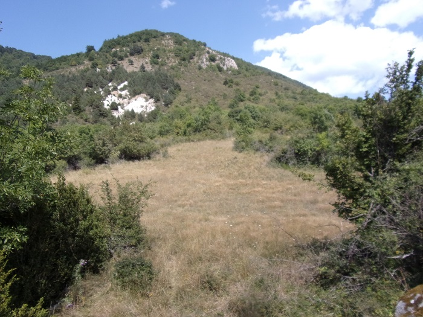
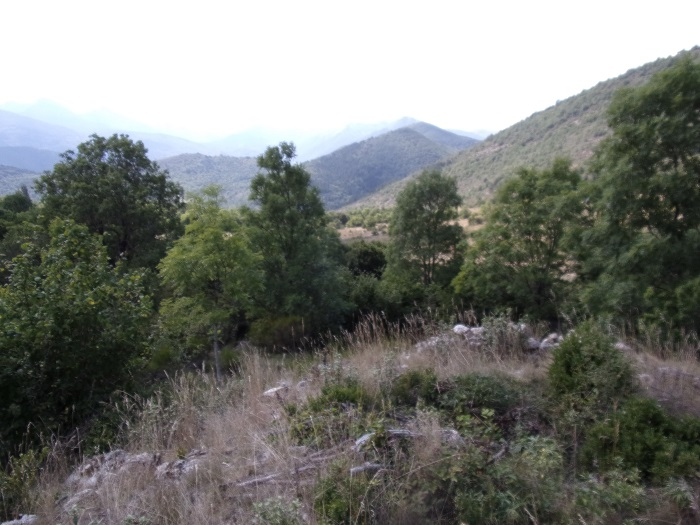
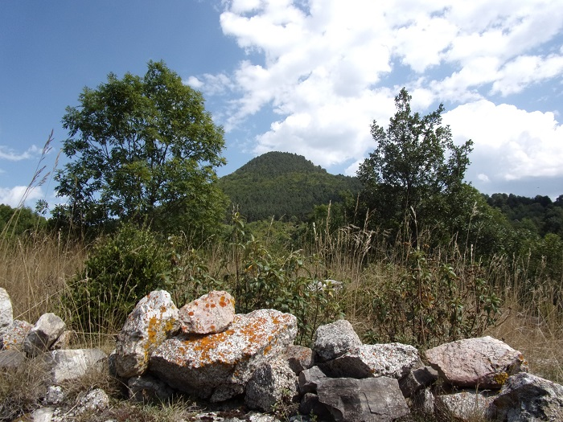

Table des entrées de la page
L'ancienne paroisse de Combret dépendant de l'abbaye de St Martin, s'est vidée au bénéfice d'Escouloubre, établie en contre bas sur des terres beaucoup plus clémentes
François Mis dans son histoire de l'église d'Escouloubre - 7 mai 1804 - travaux réalisés dans l'espoir de leur incorporation à l'Histoire Générale du Languedoc - disait de Combret :
"L'église de Saint-Peyre exista jusque vers la fin du onzième. Tant qu'elle exista les habitants de village ou hameaux d'Escolobre, à présent Escouloubre, et toutes les bordes en dépendants, Usson, Rouze, Mijanes, Artigues ect. s'y rendaient pour entendre les offices.
Tous le terroir était couvert de bois, il n'y avait qu'un seul passage ou chemin pour aller d'Escouloubre à Saint-Peyre, qui était le col Messadé qui conserve encore son nom, c'est à dire "pas" ou "passage" pour aller à la messe d'Escouloubre à Saint-Peyre.
Sur un espace dégagé entre les montagnes se trouve l'assise d'un batiment carré qui pourrait être les fondations de l'église Saint Pierre de Combret, au vu de son orientation


Les murs extérieurs de l'église

depuis le carré de l'église
  Autour de l'église
En 1858 fut inauguré le canal d'irrigation que fit creuser l'abbé d'Esperonnat curé d'Escouloubre pour amener les eaux de l'Aude jusque dans les champs de la commune d'Escouloubre


Le canal d'irrigation de l'Abbé d'Esperonnat
A venir
A venir